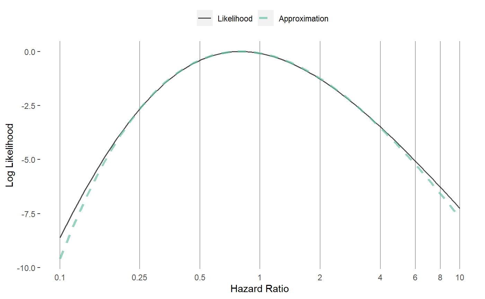
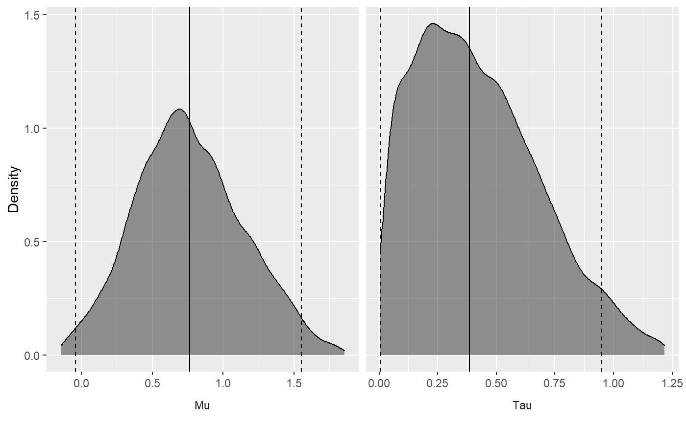
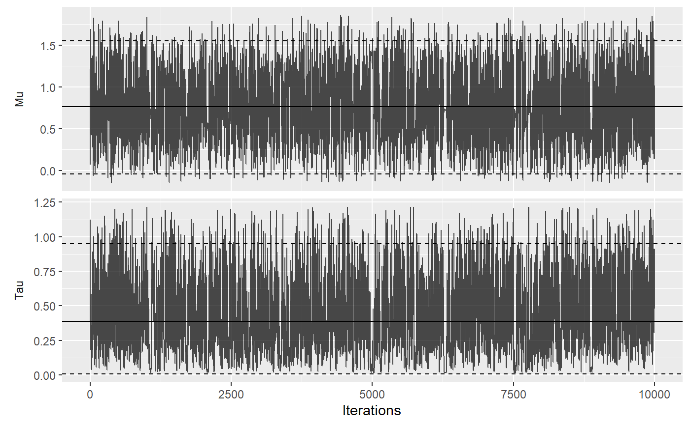

vignettes/NonNormalMetaAnalyis.Rmd
NonNormalMetaAnalyis.RmdObservational studies on the effects of treatments are often done across a distributed network of health care databases, with the following characteristics
Sharing of individual patient data (IPD) is often not allowed due to patient privacy concerns and local governance regulations.
Patients are often exposed for varying lengths of time, and may stop being followed for various reasons, making a time-to-event analysis with right-censoring such as a Cox proportional hazards regression the most prevalent analysis.
Due to the observational nature of the data, some correction for baseline differences between exposure groups is often necessary to avoid confounding. This is often done by stratifying, matching, or weighting by propensity score or disease risk score.
Since data sites often differ in the population they capture or in their capture process, some heterogeneity between sites should be assumed to exist.
Because no IPD may be shared, data must be aggregated in some way to avoid patient identifiability before communication. Current practice is to estimate the hazard ratio (with standard error) per database, and combine these across sites using a traditional meta-analysis for random effects. However, with small counts the true per-database likelihood function may no longer be approximately normally distributed, as is assumed by this approach. Especially when zero events are observed in one of the treatment arms but not both, the likelihood is far from normally distributed, yet still holds information on the parameter of interest. Even though databases in a network are typically large in terms of the total number of patients covered, when restricting to patients having specific outcomes while exposed to specific treatments the numbers quickly dwindle to numbers small enough for this issue to be of concern.
This vignette describes how this problem can be solved by using a non-normal approximation of the per-database likelihood. The EvidenceSynthesis package supports various approximations of the likelihood that are more appropriate when sample size is small and also still apply when sample sizes are large, allowing sites to contribute information on the overall likelihood distribution of a parameter of interest (ie. the effect of the treatment on the outcome) without sharing IPD. This package further provides functions for synthesizing the likelihood approximations from the various sites to a single estimate.
To demonstrate how to use the EvidenceSynthesis package, we will generate some simple simulated data. For this, we will use the simulatePopulations() function included in the EvidenceSynthesis package:
library(EvidenceSynthesis) simulationSettings <- createSimulationSettings(nSites = 5, n = 10000, treatedFraction = 0.75, nStrata = 5, hazardRatio = 2, randomEffectSd = 0.5) populations <- simulatePopulations(simulationSettings)
Here we specify we want to simulate 5 data sites, each with 10,000 subjects. Of these, 75% should be exposed to the target treatment (the remaining 25% will be in the comparator cohort). At each site, the data are stratified in to 5 strata (e.g. propensity score strata), each with a different baseline risk of the outcome. The target hazard ratio is 2, but there is a random effect with standard deviation = 2 (ie. each site draws its log(hazard ratio) from a normal distribution with mean = log(2) and standard deviation = 0.5).
The resulting populations object is a list of data frames, each with person-level data:
In a real study, we would not have all the person-level data available at one site. Instead, each site would have their data behind their organization’s firewall, without the ability to share person-level data. To be able to synthesize evidence across sites, we need to share information about the parameter of interest (the effect size) without sharing person-level data. We can do this by approximating the likelihood function of the parameter at each site, and communicating only the parameters of the approximation.
First, we fit our model for the effect of interest. For this we use the Cyclops package:
library(Cyclops) # Assume we are at site 1: population <- populations[[1]] cyclopsData <- createCyclopsData(Surv(time, y) ~ x + strata(stratumId), data = population, modelType = "cox") cyclopsFit <- fitCyclopsModel(cyclopsData)
If we are interested, we can see what the local estimate was of the hazard ratio and its confidence interval:
## x
## 0.8000462## [1] 0.2965148 2.5159796Note that an estimate may not exist at a database, for example if no one in the target or comparator group has the outcome. However, the likelihood may still be informative.
Next, we approximate the likelihood function of our parameter of interest:
approximation <- approximateLikelihood(cyclopsFit, parameter = "x", approximation = "custom") approximation
## mu sigma gamma
## 1 -0.2212511 0.5450224 -0.1315424Here we use the custom parametric approximation, which in research has shown to provide a good approximation in many situations. This function has only three parameters (\(\mu\), \(\sigma\), and \(\gamma\)). These parameters can be shared with the study coordinator, without sharing patient-level data.
The EvidenceSynthesis package offers three types of approximation:
In case we’re interested, we can see how closely our fitted function approximates the likelihood:
plotLikelihoodFit(approximation = approximation, cyclopsFit = cyclopsFit, parameter = "x")
## Detected custom parameric approximation
For this example we will create the approximations for all sites in one short script. In reality, each site will have to execute the code described above.
fitModelInDatabase <- function(population) { cyclopsData <- createCyclopsData(Surv(time, y) ~ x + strata(stratumId), data = population, modelType = "cox") cyclopsFit <- fitCyclopsModel(cyclopsData) approximation <- approximateLikelihood(cyclopsFit, parameter = "x", approximation = "custom") return(approximation) } approximations <- lapply(populations, fitModelInDatabase) approximations
## [[1]]
## mu sigma gamma
## 1 -0.2212511 0.5450224 -0.1315424
##
## [[2]]
## mu sigma gamma
## 1 1.636895 1.019252 -0.2780579
##
## [[3]]
## mu sigma gamma
## 1 1.110001 1.047454 -0.2250997
##
## [[4]]
## mu sigma gamma
## 1 1.712535 1.014649 -0.2882376
##
## [[5]]
## mu sigma gamma
## 1 0.2528428 0.8100675 -0.168423Here, for each population we fit the model, and create the approximation. The resulting object is a list of approximations, one for each site.
Assuming we have gathered the approximations from all participating sites, we can now produce a single estimate of the effect size. The EvidenceSynthesis package implements two different approaches to achieve this: assuming fixed-effects, or using a Bayesian model for random-effects.
A fixed-effects model assumes the true effect size is identical at each site. This assumption is reasonable if the sites are highly homogeneous, and have recruited very similar individuals. We use the computeFixedEffectMetaAnalysis() function, which takes a single table containing all per-database approximations as input:
# Combine the various approximations into a single data frame, one row per database: approximationsTable <- do.call(rbind, approximations) # Do meta-analysis estimate <- computeFixedEffectMetaAnalysis(approximationsTable)
## Detected data following custom parameric distributionestimate## rr lb ub logRr seLogRr
## 1 2.03034 1.087344 4.145074 0.7082031 0.3413795Alternatively, we can use a random-effects model, assuming that the effect sizes at each site might be slightly different, but are all drawn from the same distribution of effect sizes. We assume that distribution is a normal distribution with mean \(\mu\) and standard deviation \(\tau\). Because such a model tends to be unstable when sample sizes are small, we treat this as a Bayesian problem, and use Markov chain Monte Carlo sampling to sample from the posterior distribution.
We can use the computeBayesianMetaAnalysis() function to combine the approximations into a single estimate. This function also takes a single table containing all per-database approximations as input:
# Combine the various approximations into a single data frame, one row per database: approximationsTable <- do.call(rbind, approximations) # Do meta-analysis estimate <- computeBayesianMetaAnalysis(approximationsTable)
## Detected data following custom parameric distribution
## Performing MCMC. This may take a whileexp(estimate[1:3])
## mu mu95Lb mu95Ub
## 1 2.147574 0.9600816 4.717529We output the point estimate and 95% credible interval of our main parameter of interest \(\mu\), and exponentiate these to convert to the hazard ratio scale.
We can also view the full posterior distribution:
plotPosterior(estimate)

And the trace of the MCMC:
plotMcmcTrace(estimate)

The computeBayesianMetaAnalysis uses a normal and half-normal prior for the \(\mu\) and \(\tau\) parameters, respectively. By default, the standard deviations are set to 2 for \(\mu\) and 0.5 for \(\tau\). A standard deviation of 2 on the \(\mu\) parameter expresses the belief of a 95% probability that the true value of \(\mu\) is between -3.92 and 3.92, corresponding to hazard ratios from 0.02 to 50.40.
With less data, the choice of prior becomes more important. In a small-sample scenario, we may for example choose a stronger prior on \(\tau\) if we have reasons to believe between-site heterogeneity of the effect size will be small:
estimate2 <- computeBayesianMetaAnalysis(approximationsTable, priorSd = c(2, 0.1))
## Detected data following custom parameric distribution
## Performing MCMC. This may take a whileexp(estimate2[1:3])
## mu mu95Lb mu95Ub
## 1 2.061201 1.009449 3.901828Here we still use a prior with a standard deviation of 2 on \(\mu\), but for \(\tau\) we specify a prior with a standard deviation of 0.1 instead of 0.5. As can be seen by the narrow credible interval, this stronger prior on \(\tau\) leads to less uncertainty around \(\mu\).